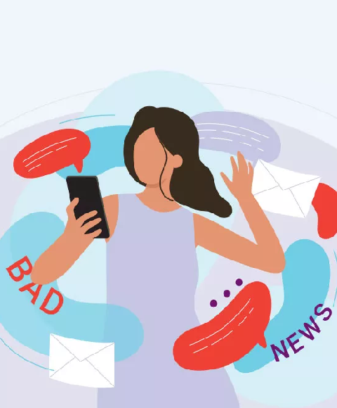
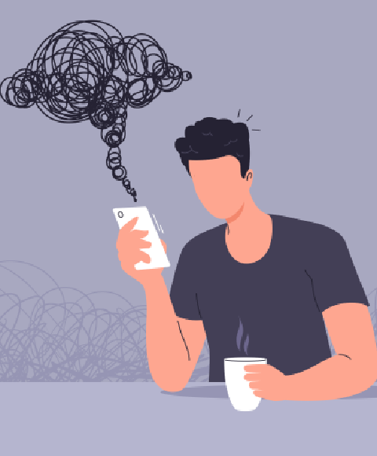
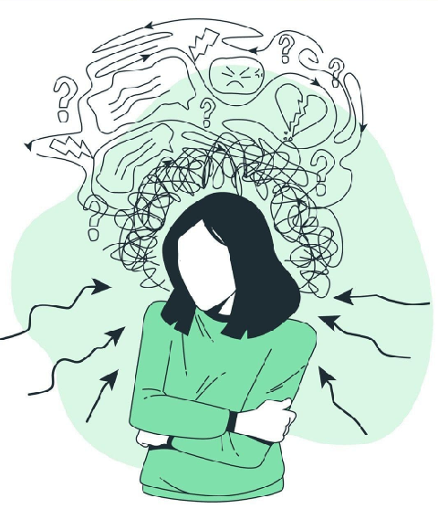
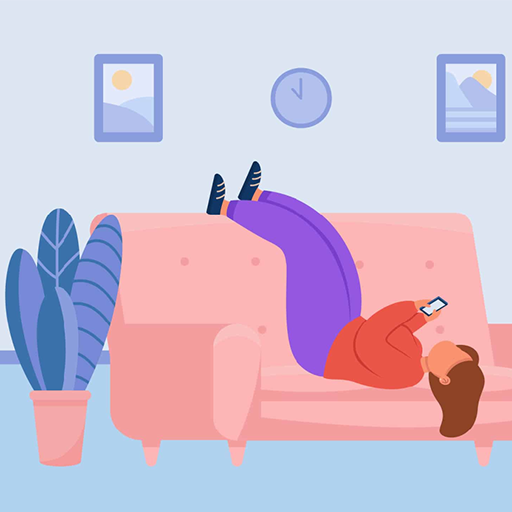

We hope to help you avoid the destructive habit of doom scrolling on social media to have more time to spend on the things that truly matter.
Check out our Facebook page
The tendency to keep scrolling through upsetting or alarming information online without stopping.

Continuing to browse negative content even when it causes anxiety, fear, or emotional exhaustion.

The urge to check for updates or answers to ease uncertainty, which often fuels more stress instead.
Constant exposure to negative news keeps your mind in a state of worry and tension.
Late-night scrolling and over-stimulation make it hard to rest or concentrate during the day.
Absorbing nonstop bad news drains your energy, leaving you feeling hopeless or overwhelmed.

“You don't have to control your thoughts. You just have to stop letting them control you.”
– Dan Millman